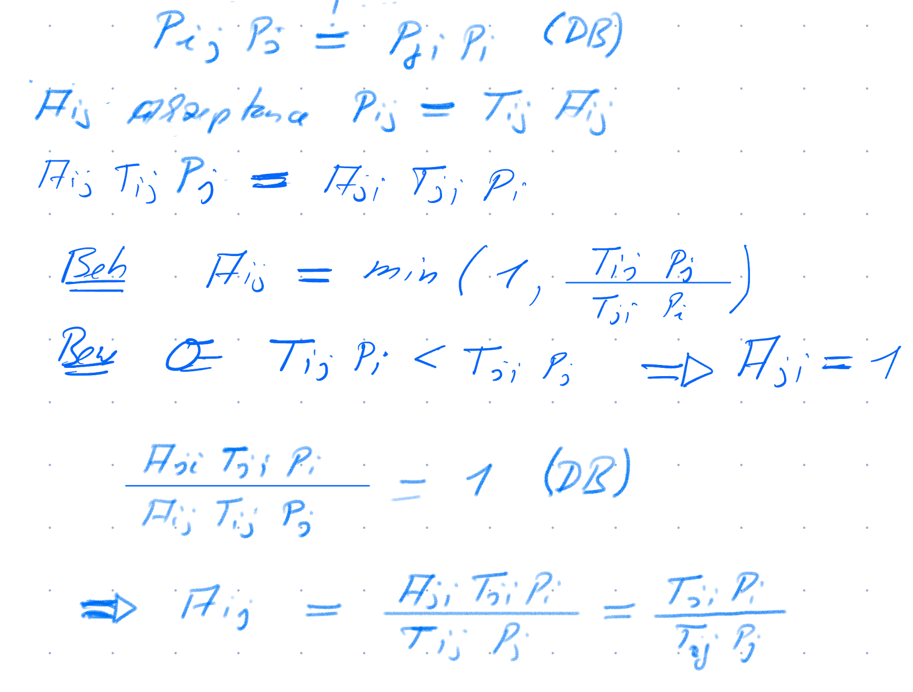

Lecture Notes on MCMC
In this lecture note, we will discuss the basics of Markov Chain Monte Carlo (MCMC) methods. MCMC methods are a class of algorithms that are used to sample from a probability distribution \(p(\theta)\) such as the posterior \(p(\theta|D) \propto p(D|\theta) p(\theta)\). While there are more advanced MCMC methods, we will focus on the Metropolis-Hastings algorithm, which is a simple and widely used MCMC algorithm and shows the principles of MCMC methods.
📝 A note on notation
In this lecture note, we will use the following notation:
- \(\theta\) is a parameter of interest. This could be a scalar or a vector.
- \(D\) is the data.
- \(p(\theta)\) is the prior distribution of \(\theta\) and
- \(p(D|\theta)\) is the likelihood of the data given \(\theta\).
- \(p(\theta|D)\) is the posterior distribution of \(\theta\) given the data \(D\)
All expressions are read right to left, e.g. \(p(\theta|D)\) is the posterior distribution of \(\theta\) given the data \(D\) and \(P_{ij}\) is the probability of moving from state \(j\) to state \(i\).
Using \(p(\theta)\) instead of \(p(\theta|D)\)
Since the MCMC methods works with any probability distribution, we will use \(p(\theta)\) to denote the target distribution that we want to sample from. In the context of Bayesian inference, \(p(\theta)\) is the posterior distribution \(p(\theta|D)\) without explicitly stating the data \(D\). You can also think of it as the posterior when you have no data (the prior).
📊 Densities vs. 📉 probabilities
While in general in the lecture we will use the terms “density” and “probability” interchangeably. However, in the context of MCMC methods, we will use the term “density” to refer to the probability density function of a continuous distribution and “probability” to refer to the probability mass function of a discrete distribution. In case the destinction is crucial, we will use the terms \(P(\cdot)\) for probabilities and \(p(\cdot)\) for densities.
🔭 A high level overview of Markov Chains.
A Markov chain is a sequence of random variables \(\theta_1, \theta_2, \theta_3, \ldots\) which can be viewed as a time series where the next value depends only on the current value (Markov Property). In Figure 1: we show two Markov chains, starting from different initial values. Note that after about 150 steps both chains fluctuate around the same value. This is the stationary distribution of the Markov chain. A Markov chain reaches a stationary distribution when the distribution of the states no longer changes as the chain progresses.
In Figure 2, we show a histogram1 of the values of the two chains after from 250 steps onward. The histogram indicate that the values of the chains are distributed around the same distribution is the stationary distribution of the Markov chain.

The key idea of MCMC methods is to construct a Markov chain that has a stationary distribution equal to the target distribution \(p(\theta)\). Once the Markov chain has converged to the stationary distribution, we can use the samples from the chain to approximate the target distribution.
So how do we construct a Markov chain with a stationary distribution equal to the target distribution \(p(\theta)\)? To do so, we draw insights from statistical physics.
Statistical physics and detailed balance
Consider a glass of water in which we add a drop of ink. The ink will spread out in the water until it is uniformly distributed. This is an example of a system that has reached equilibrium. The the following ideas, are important inspirations for MCMC methods:
Ergodic Hypothesis - The diffusion process can be viewed as either a single particle or many particles. Initially concentrated in one region, a particle will eventually explore the entire space uniformly, regardless of its starting point. This idea, known as the Ergodic Hypothesis, was first proposed by Boltzmann.
The reaching of the stationary distribution - Over time, particles reach a stationary distribution (in physics is referred to as the equilibrium distribution). For example, ink in water eventually reaches a uniform distribution. However, not all distributions are uniform. For instance, the barometric height equation describes how particles in the air are more concentrated at the ground and decrease exponentially with height.
Detailed Balance - At stationarity, the rate at which particles move from one point to another is equal to the rate at which they move in the opposite direction. This concept is known as detailed balance and is crucial for understanding the Metropolis-Hastings algorithm.
From that, we can design the MCMC Algorithms algorithms. Roughly as follows * Start with parameter of interest \(\theta\) at certain position * Mimics the diffusion process but with a stationary distribution of our choosing \(p(\theta)\) * Algorithm needs to obey the detailed balance condition, this allow us to define the transition probabiliy with which we go from one value to another.
⚖️ Detailed balance
For a Markov chain to be useful, it needs to convert to a stationary distribution and the stationary distribution needs to be the target distribution \(p(\theta)\). The Metropolis-Hastings algorithm is a simple MCMC algorithm that ensures that the Markov chain converges to the desired stationary distribution. The Metropolis-Hastings algorithm is based on the principle of detailed balance. Also almost all other MCMC algorithms (such as Hamiltonian Monte Carlo, Slice Sampling, and Gibbs Sampling) are based on the principle of detailed balance. So what is detailed balance?
For the ink particles, we have a uniforn distribution as stationary distribution. For the ink particles in the water glass the detailed balance condition is that the rate at which particles move from one point to another is equal to the rate at which they move in the opposite direction. Remember the example with the king visiting the islands? The king will visit the islands with a probability proportional to the size on the island. So the stationary distribution is not uniform anymore. The detailed balance condition can be used to determine the probability \(P_{ji}\) of moving from island \(i\) to island \(j\). Now consider N Kings, in order that the number of Kings on the islands have reached a stationary distribution, at each time step as many Kings need to move from one island to another as move in the opposite direction. Otherwise the number of Kings on the islands would change over time and we have not yet reached the stationary distribution. The detailed balance condition is (a bit slopy) given by:
\[ P_{ij} N_j = P_{ji} N_i \]
with \(P_{ij}\) the probability of moving from island \(i\) to island \(j\) and \(N_i\) the number of Kings on island \(i\). Let’s divide both sides by \(N\)
\[ P_{ij}\underbrace{P_{j}}_{N_j/N} = P_{ji}\underbrace{P_{i}}_{N_j/N} \]
Figure 3 shows the detailed balance situation in a system with discrete states (such as kings). Note that the detailed balence is between two states \(i\) and \(j\) and that other states \(k\) are not taken into account.
The detailed balance condition the probability \(P_{ij}P_j\) (fraction of Kings/Particle) move from \(j\) to \(i\) is equal to the probability \(P_{ji}P_i\) (fraction of Kings/Particle) move from \(i\) to \(j\).
🎛️Controling \(P_{ij}\)
Let’s choose \(P_{ij}\) in our favor, so that in equilibrium the distribution \(P_i\) is the distribution we want. We can do this by proposing a move from \(i\) to \(j\) with a probability \(T_{ij}\) and then accept the move with an acceptance probability \(A_{ij}\). The cool idea that physicists had in the 1950’s is to choose the acceptence probability \(A_{ij}\) as:
Metropolis-Hastings acceptance probability
\[ A_{ij} = \min (1, \frac{T_{ji}P_i}{T_{ij} P_j}) \]
Why is detailed balance fullfilled?

If we know move a particle according to the Metropolis Hastings Acceptance rate. We start in state \(\theta_0\) and propose a move to \(\theta^*\) with \(T(\theta^*|\theta_0)\). We accept the new state with a probability according to the MH Acceptance probability. If we repeat we get the following chain of moves.
- Initialize: Start with an initial value \(\theta_0\).
- Propose: new state \(\theta^*\) from old state \(\theta_t\) with a proposal distribution \(T(\theta^* | \theta_t)\).
- Calculate Acceptance Probability: Compute the acceptance probability \[ A = \min \left(1, \frac{T(\theta_t | \theta^*) p(\theta^*)}{T(\theta^* | \theta_t) p(\theta_t)}\right) \]
- Accept proposed state: With probability \(A\), set \(\theta_{t+1} = \theta^*\). Otherwise, continue with old state, \(\theta_{t+1} = \theta_t\).
- Iterate: Repeat steps 2-4 for a large number of iterations to ensure convergence to the stationary distribution.
A short note on the continuous case
So far we have discussed the Metropolis-Hastings algorithm in the context of discrete states. However, the Metropolis-Hastings algorithm can be extended to continuous states, easily. There might be pitfalls when changing to the continuous case, don’t just replace the probabilities \(P_i\) with densities \(p(\theta)\)! However here the Metropolis-Hastings algorithm is the same as in the discrete case. Just exchange the probabilities with densities.
For the acceptance rate \(p(\theta)\) is needed only up to a constant factor, this makes it ideal for Bayesian inference, where we just need \(p(\theta|D) \propto p(D|\theta)p(\theta)\).
This process ensures that the Markov chain will converge to the target distribution \(p(\theta)\), allowing us to approximate the distribution through the samples obtained from the chain. Let’s give it a try, we assume symetric proposal distribution \(T(\theta^*|\theta) = T(\theta|\theta^*)\) and we want to sample from the \(p(\theta) \propto Exp(\lambda = 1/10)\).
📝 Exercise (Simple MCMC Algorithm)
Play around with the code above.
What do you observe if you change the standard deviation of the proposal distribution?
Change the target distribution to \(p(\theta) \propto \exp(-\theta^2/2)\).
🐛The hairy caterpillar
There can be several problems when using the Metropolis-Hastings algorithm.
- Slow mixing: The Markov chain takes a long time to converge to the stationary distribution.
- Random walk behavior: Too small steps in the proposal distribution can lead to a behavior, where the chain moves slowly through the parameter space and many samples are correlated.
- Trap in local minima: The chain gets trapped in a local minimum and does not explore the parameter space properly
🛠️ Tools to inspect the chain
First look at the trace of the chain(s), this is called traceplot. Simply plot the parameter values against the steps. Such a traceplot has been shown in Figure 1. We clearly see that the 2 chains have converged to the same region (stationary distribution). Another traceplot is shown in Figure 4.
This traceplot compares the parameter \(a\) sampled with Stan (a more advanced MCMC algorithm) and the Metropolis-Hastings algorithm. We see that the Metropolis-Hastings algorithm moves slowly through the parameter space. In contrast, the Stan samples are less correlated and move more faster through the complete parameter space. This fast moving through the parameter space is called “efficient mixing” or a “hairy caterpillar”. The effect of this “hairy caterpillar” is that the samples are less correlated and hence provide more information about the posterior distribution of the parameter. This can be quantified by the effective sample size (ESS), which is the number of independent samples that provide the same information as the correlated samples.
Finally, in the case of bimodal distributions, MCMC algorithms can get stuck in one of the modes. This is shown in Figure 5 . Some chains of have converged to the one mode and it takes a long time to switch to the other mode. While the true bimodal distribution would be sampled for infinite times it practically takes a long time to sample from both modes and the respecitve modes are not sampled equally.
You can play around a bit with the overlap of the two modes and the standard deviation of the proposal distribution in https://oduerr.github.io/anim/mcmc_mh.html
🤔 Continuous case details*
*This is and advanced topic, which might be well skipped on first reading.
Let’s look at the continous case in more detail. We derived the Metropolis-Hastings algorithm for the discrete case, where we have probabilities and not densities. The MH acceptance probability is given by
\[ A_{ij} = \min (1, \frac{T_{ji}P_i}{T_{ij} P_j}) \]
The probability \(P_i\) for the state \(\theta_i\) is replaced by the density \(p(\theta_i)\) times the infinitisimal volume element \(d\theta_i\). The transition probability \(T_{ji}\) that starting in \(i\) we move to \(j\) is replaced by the proposal density \(T(\theta_j|\theta_i)\) times the infinitisimal volume element \(d\theta_j\). Note we have a probability in the target volumne \(d\theta_j\) and not in the “from” volume \(d\theta_i\). So altogether we get
\[ A(\theta_i \leftarrow \theta_j) = \min \left(1, \frac{d\theta_j T(\theta_j|\theta_i) p(\theta_i) d\theta_i}{d\theta_i T(\theta_i|\theta_j) p(\theta_j) d\theta_j}\right) \] Note that the volume elements \(d\theta_i\) and \(d\theta_j\) cancel out. So we get
\[ A(\theta_i \leftarrow \theta_j) = \min \left(1, \frac{T(\theta_j|\theta_i) p(\theta_i)}{T(\theta_i|\theta_j) p(\theta_j) }\right) \tag{1}\] Which is the same as in the discrete case! However, there might be pitfalls when changing to the continuous case, don’t just replace the probabilities \(P_i\) with densities \(p(\theta)\)! This is for example the case in the following.
The MH Criterion is the same in the continuous case as in the discrete case. Just replace the probabilities with densities.
⚠️ Sampling in a different space
There are several reasons, to sample in a different space, then the space where the target distribution \(p(\theta)\) is defined. It might be hard to sample in \(\theta\), but it’s easy to sample in another space \(x\). For example in \(\theta\) the probability landscape might have very narrow regions, but in \(x\) it’s much nicer behaved. We will encounter this in the famous Neal’s funnel example later. Another reason is that \(\theta\) is in a restricted space. We will use the following example in spherical coordinates to illustrate this. Suppose we have a problem where we have a good idea that the radius \(r\) is around 1, but we have no idea about the angle \(\varphi\). We can express this in the following prior
\[ p(\theta) = p(r,\varphi) = p(r)p(\varphi) = N(r|1,0.1) \cdot U(\varphi|0,2\pi) \] Assume, we have no data, then the Target Distribution is then given by \(p(r,\varphi) \propto N(r|1,0.1)\). Note that in this space, we have restrictions on the parameters \(r > 0\) and \(0 \le \varphi < 2\pi\). We have to design the proposal density \(T(\theta^*|\theta)\) such that these restrictions are intact. While this is possible in the Metropolis-Hastings algorithm, it’s really hard to enforce this in more advanced algorithms like Hamiltonian Monte Carlo, where we need an unrestricted space. To solve this we transform the problem in a difference space \(x\), where we have no restrictions. The acceptance probability is then Equation 1 with \(\theta\) replaced by \(x\).
\[ A(x_i \leftarrow x_j) = \min \left(1, \frac{T(x_j|x_i) p(x_i)}{T(x_i|x_j) p(x_j) }\right) \tag{2}\]
So what is missing is \(p(x)\). Be careful and consider probabilities:
\[ p(x) dx = p(\theta) d\theta \quad \Rightarrow \quad p(x) = p(\theta) \left| \frac{d \theta}{d x} \right| \] With the Jacobian Determinant \(J = \left| \frac{d\theta}{dx} \right|\), e.g. Equation 1 becomes:
\[ A(\theta_i \leftarrow \theta_j) = \min \left(1, \frac{T(\theta_j|\theta_i) p(\theta_i)}{T(\theta_i|\theta_j) p(\theta_j)} \right) = \min \left(1, \frac{T(x_j|x_i) p(x_i) J_i}{T(x_i|x_j) p(x_j) J_j} \right) \]
We have \(x_1 = r \cos(\varphi)\) and \(x_2 = r \sin(\varphi)\), so calculation of \(\frac{d x}{d \theta}\) would be simple, so we calculate the inverse of the Jacobian Determinant: \[ J^{-1} = \left| \begin{pmatrix} \frac{\partial x_1}{\partial r} & \frac{\partial x_1}{\partial \varphi} \\ \frac{\partial x_2}{\partial r} & \frac{\partial x_2}{\partial \varphi} \end{pmatrix} \right| = \left| \begin{pmatrix} \cos(\varphi) & -r \sin(\varphi) \\ \sin(\varphi) & r \cos(\varphi) \end{pmatrix} \right| = r (\cos^2(\varphi) + \sin^2(\varphi)) = r \] The Jacobian Determinant is then \(J = 1/r\). We can now sample in the unrestricted space \(x_1\) and \(x_2\) and apply the Jacobian Determinant. The following code snippet shows how to sample from the target distribution in unrestricted space \(x_1\) and \(x_2\) and how to correctly apply the Jacobian Determinant.
⚠ Likelihood in different space
Consider the where are in a parameter space \(\theta\) and we have in that space the likelihood \(p_\theta(D|\theta)\) and prior \(p_\theta(\theta))\) and thus the posterior is
\[ p_\theta(\theta|D) \propto p_\theta(D|\theta) p_\theta(\theta) \]
We now transform in an different space \(\varphi\) with the transformation \(\theta = f(\varphi)\). The likelihood in the new space is then given by \(p_\varphi(D|\varphi)\) and the prior by \(p_\varphi(\varphi)\) and hence the posterior is
\[ p_\varphi(\varphi|D) \propto p_\varphi(D|\varphi) p_\varphi(\varphi) \]
Of course we can sample, evaluate the likelihood and prior in either space and get the same result. What happens if we sample in the \(\varphi\) space
- Start with \(\varphi_0\)
- Propose \(\varphi^*\) from \(\varphi_0\) with \(T(\varphi^*|\varphi_0)\)
- Calculate the unnormalized posterior in the \(\varphi\) space \(p_\varphi(D|\varphi^*) p_\varphi(\varphi^*)\)
- Assuming a symetric proposal distribution \(T(\varphi^*|\varphi_0) = T(\varphi_0|\varphi^*)\) we get the Metropolis-Hastings acceptance probability from the ratio \(p_\varphi(D|\varphi^*) p_\varphi(\varphi^*)/p_\varphi(D|\varphi_0) p_\varphi(\varphi_0)\).
Is it OK to calculate the likelihood in the \(\theta\) space by the transformed \(\varphi\)? For that the ratio of the likelihoods \(p_\theta(D|f(\varphi^*)) /p_\theta(D|f(\varphi_0)) \overbrace{=}^{!} p_\varphi(D|\varphi^*) /p_\varphi(D|\varphi_0)\) needs to be the same.
Let’s make a concrete Example.
Footnotes
Well actually its a density plot
plot(density(.))and nothist(.)↩︎